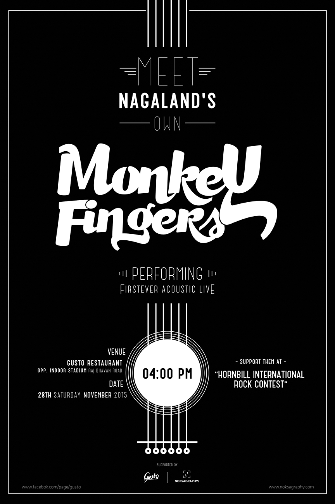

Hey There
A style prototype is a single HTML page which outlines site colors, typography, photographic style, button styles, rollovers, and other necessary elements to establish design direction before creating full site comps. In a sense, it is a safety measure intended to avoid rehashing (or completely scrapping) site designs in which hours of time and budget have been invested.
- 